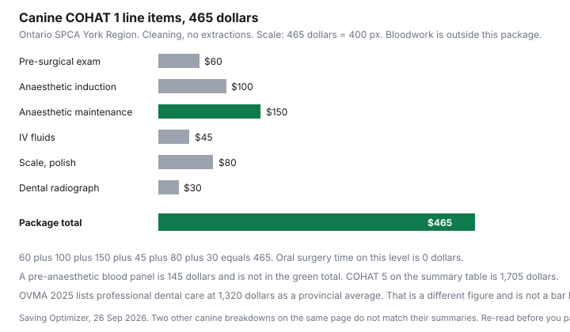

Pets · Canada
Pet Dental Costs in Canada: Why Cleanings Cost So Much and How to Prevent Them
A pet dental estimate looks large because it is an anaesthetic procedure with imaging, not a cosmetic polish. This page shows how to read that estimate, using the Ontario SPCA’s published packages and the Ontario Veterinary Medical Association’s 2025 average. A headline range of $500 to $1,500 and up was not what those pages printed, so it is not the title of this guide. Nothing here tells you to book or to delay a procedure. That is your veterinarian’s recommendation. Education only.
Disclosure: Amazon.ca storefront types are an offer type for supplies such as brushes. Saving Optimizer may earn a commission if we later add a partner link. We do not currently claim an Amazon.ca partnership. A storefront does not choose a dental product for your pet. Education only. This is not veterinary advice.
Key takeaways
- Ontario SPCA, York Region, page opened 26 Sep 2026: canine COHAT 1 (cleaning, no extractions) $465. Feline COHAT 1 $390. Canine COHAT 5 $1,705. Feline COHAT 5 $1,435.
- Those packages include anaesthesia, scaling, polishing, X-rays, and extractions as the level requires. A dental consult at $60, and a pre-anaesthetic blood panel at $145, are outside the package.
- A non-refundable 50 percent deposit of the low end of the estimate holds the date. Registration was closed on the page, with a note to check next month.
- OVMA 2025: professional dental care $1,320 as a provincial average for an adult dog. That is not the same figure as a COHAT package.
- The Veterinary Oral Health Council lists accepted products for plaque or tartar claims. The seal is not a substitute for a COHAT, and this page names no “best” product.
What a dental under anesthesia includes
The Ontario SPCA York Region dental page says COHAT means complete oral health assessment and treatment. During a COHAT the pet is under general anaesthesia, each tooth is examined, teeth are scaled and polished, dental radiographs are taken, and unhealthy, loose, fractured, or infected teeth are extracted and the gums sutured. The package list says it includes a pre-surgical exam the day of surgery, day hospitalisation with no overnight care, the procedure itself, anaesthesia and anaesthetic medications, standard post-operative pain medication, and a recheck for surgery-related complications if the veterinarian says one is needed.
What is not included, on that page: the dental consult, pre-surgical bloodwork and the sample-collection fee, additional medications such as extended pain control, antibiotics, or anti-nausea drugs, an e-collar, vaccinations, a microchip, and medications from a recheck. The consult exam is $60. A pre-anaesthetic blood panel is $145. A wellness blood panel is $190. A senior panel is $160. Sample collection is $25. Vaccines are $33. A microchip is $36. If you only remember the package price, you will under-budget. Add the lines your animal actually needs, and ask which blood panel applies.
Estimates: extractions and X-rays
The same page prices five canine and five feline levels. Canine: COHAT 1 $465, COHAT 2 $835, COHAT 3 $1,180, COHAT 4 $1,425, COHAT 5 $1,705. Feline: $390, $625, $855, $1,165, and $1,435. COHAT 1 is labelled cleaning with no extractions. Higher levels add oral-surgery time and more radiograph cost. The low end is the number the deposit is based on. The high end is what the mouth may become after the X-rays, when the pet is already anaesthetised. Ask how the clinic will reach you if the level changes, and what “low end of the estimate” they will use for the 50 percent deposit. The page says that deposit is non-refundable, applied to the final invoice, and the balance is due the day of surgery once the level is confirmed.
Two canine breakdown blocks on the same page do not add up to the summary price. COHAT 2’s item costs as printed add to $785, while the summary says $835. COHAT 3’s item costs add to $1,080, while the summary says $1,180. COHAT 1 adds to $465, COHAT 4 to $1,425, and COHAT 5 to $1,705, which match their summaries. Feline COHAT 1’s items add to the stated $390. When a breakdown and a summary disagree, ask the clinic which number is the invoice before you pay the deposit. This guide uses the summary table for the package prices and flags the two mismatches rather than “correcting” them.
| Line | Why it is there | Question to ask | SPCA canine COHAT 1 |
|---|---|---|---|
| Exam | A veterinarian looks at the animal before anaesthesia. | Is the $60 consult extra, or is the pre-surgical exam inside the package? | $60 inside the $465 package |
| Bloodwork | The clinic decides if anaesthesia is reasonable. | Which panel, and is it outside the package? | Not inside COHAT 1. Pre-anaesthetic panel $145 |
| Anaesthesia | The SPCA page says a COHAT is done under general anaesthesia. | What is included in induction versus maintenance? | Induction $100. Maintenance $150 on COHAT 1 |
| Monitoring and IV fluids | Fluids are a separate line on this clinic’s breakdown. | Is monitoring inside anaesthesia or billed alone? | IV fluids $45 |
| X-rays | The page says radiographs are taken because some disease is under the gum. | Full mouth, or only teeth that look diseased? | $30 on COHAT 1. Higher levels list more |
| Scaling and polish | This is the “cleaning” people think is the whole bill. | Is it a flat fee? | $80 on COHAT 1 |
| Extractions | Oral surgery time is $0 on COHAT 1 and hundreds of dollars on higher levels. | Will they call you before extracting? | $0 on COHAT 1. COHAT 5 summary is $1,705 |
| Medications | Standard post-op pain medication is included. Antibiotics may not be. | Which drugs are extra? | Post-op pain management included on COHAT 1 |

Home care that works (brushing, VOHC products)
The Veterinary Oral Health Council’s accepted-products page, opened 26 Sep 2026, groups products for dogs and cats by type: dental diets, rawhide chews, edible chews, toothpastes, water additives, and other forms. Each accepted product is tied to a claim such as plaque or tartar, a company name, and a year the seal was awarded. The page is a list, not a ranking, and not a statement that a chew prevents the need for anaesthesia. A Science Diet oral-care diet, a Purina Dentalife chew, and a Performatrin image appear among many others. Naming them here records that they were on the council’s page. It is not a recommendation to buy one, and it is not a claim they are sold at a particular Canadian price. No chew price was opened.
Brushing is the home step to ask your veterinarian to demonstrate. This draft did not open a trial that assigns a percent reduction in future cleanings to a daily brush, so no return-on-investment dollar is invented. The practical budget point is smaller. A brush and a toothpaste your veterinarian accepts cost less than a COHAT level change, and they do not replace the COHAT if the veterinarian says disease is already under the gum. If you buy supplies from an Amazon.ca storefront later, the seal to look up is the council’s, on vohc.org, not a star rating. An Amazon storefront is an offer type. It is not a partner this site claims today.
Insurance and dental exclusions
No policy wording was opened. Common questions to take to your certificate, without this page answering them: Is a cleaning treated as routine and excluded? Are extractions covered only after a waiting period? Is periodontal disease labelled pre-existing if the mouth was already noted? Is there a per-year cap? The OVMA 2025 sheet’s $1,402 insurance line is an estimate of premium and is starred as depending on the pet and the policy. It sits beside the $1,320 dental-care average. Paying a premium and needing a cleaning can both be true. Read the certificate before you count the $1,320 as reimbursable.
If a claim is denied, get the denial in writing and compare it to the certificate. The household appeal guide is a way to read a denial. Pet policies are a different contract. Do not assume the household steps change a dental exclusion.
Timing and comparison quotes
Get the estimate in the same shape from each clinic: exam, bloodwork, anaesthesia, monitoring, X-rays, scaling, extraction rules, medications, and deposit. A lower package that excludes radiographs is not comparable to the SPCA COHAT, which includes them. Ask whether the price can rise after X-rays and how you will be contacted. The SPCA page says registration for dental appointments was closed when opened on 26 Sep 2026. “Check back next month” is the clinic’s sentence, not a promise of an opening. The deposit, when you do book, is 50 percent of the low end and non-refundable.
Park the low-end deposit and a buffer toward a higher COHAT level where you can reach them. The emergency-fund guide and a sinking fund are the mechanics. A canine jump from COHAT 1 at $465 to COHAT 2 at $835 is $370 on the summary table, before the blood panel. That gap is why the buffer exists. It is not a prediction that your dog will need extractions.
Cats vs dogs
On this clinic’s summary table, every feline level is priced below the matching canine level. Feline COHAT 1 is $390 against canine $465. Feline COHAT 5 is $1,435 against canine $1,705. The feline COHAT 1 breakdown shows a shorter anaesthetic-maintenance line ($75) and the same $60 exam, $100 induction, $45 IV fluids, $80 prophy, and $30 radiographs. A cat is not a small dog on a fee guide, and a dog is not a large cat. Use the species row. The OVMA figure of $1,320 is from the canine cost-of-care PDF. A feline OVMA dental line was not in the PDF opened for this draft, so it is not invented.
The yearly household view, if you want one association number beside the clinic menu, is that $1,320 professional-dental average plus the other 2025 adult-dog lines discussed on the parasite guide. They are averages for planning a budget. They are not an instruction to clean every dog’s teeth on a birthday.
Sources & date stamps
- Ontario SPCA, Dental Services, York Region Veterinary Clinic, Stouffville. COHAT definition, inclusions, deposit rule, registration closed, and the fee tables. Opened 26 Sep 2026. Two canine breakdowns do not add to their summary totals.
- Ontario Veterinary Medical Association, 2025 cost-of-care canine PDF. Professional dental care $1,320. Pet insurance starred at $1,402 as an estimate. Opened 26 Sep 2026.
- Veterinary Oral Health Council, accepted products page. Plaque and tartar claims by product type. No prices. Opened 26 Sep 2026.
- A “$500 to $1,500+” cleaning range was not the figure on these pages. The title was changed for that reason. The SPCA packages and the $1,320 average are the figures used instead.
Frequently asked questions
Why does a pet dental cleaning cost so much?
The pages opened do not support a single national range. At the Ontario SPCA York Region clinic, a canine COHAT 1 package, cleaning with no extractions, is listed at $465, and the line items inside it include an exam, anaesthetic induction, anaesthetic maintenance, IV fluids, scaling and polish, and dental radiographs. A complex canine package on the same page is $1,705. The Ontario Veterinary Medical Association’s 2025 provincial average for professional dental care is $1,320 for an adult dog. Anaesthesia, monitoring, and X-rays are why a “cleaning” is not a quick scrape.
Is anesthesia necessary?
The Ontario SPCA describes a COHAT as a procedure under general anaesthesia, with a full oral exam, scaling, polishing, radiographs, and extraction of unhealthy teeth. This page does not evaluate anaesthesia-free cleanings and does not tell you to skip anaesthesia. Ask your veterinarian what they recommend for your animal, including the bloodwork they want beforehand. The same clinic lists a pre-anaesthetic blood panel at $145, which is outside the package.
Does pet insurance cover dental?
No pet-insurance certificate was opened, so no exclusion, waiting period, or reimbursement percent is stated. The OVMA 2025 sheet stars pet insurance at $1,402 and says the premium depends on the pet, the policy, and other choices. Read your certificate for dental cleaning, extractions, and whether routine care is excluded. A premium estimate is not coverage.
What home care actually works?
The Veterinary Oral Health Council publishes a list of products it has accepted for a plaque or tartar claim, including diets, chews, toothpastes, and water additives. Acceptance is a council seal for that claim. It is not a promise that a chew replaces a cleaning under anaesthesia, and this page does not pick a product. Brushing is the habit to ask your veterinarian about. A seal on a bag is a label to understand, not a ranking.
How often do pets need dental cleanings?
No interval was printed on the OVMA sheet or the Ontario SPCA dental page. The $1,320 figure is an annual average for professional dental care in the association’s adult-dog budget, not an instruction to book every twelve months. Your veterinarian sets the interval from the mouth they examine. Home care may change that interval. It does not delete the estimate.